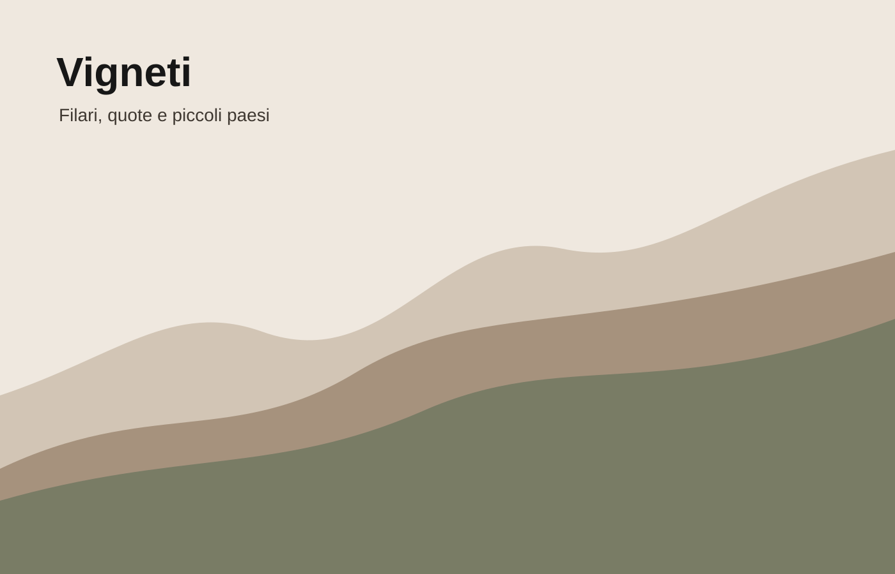
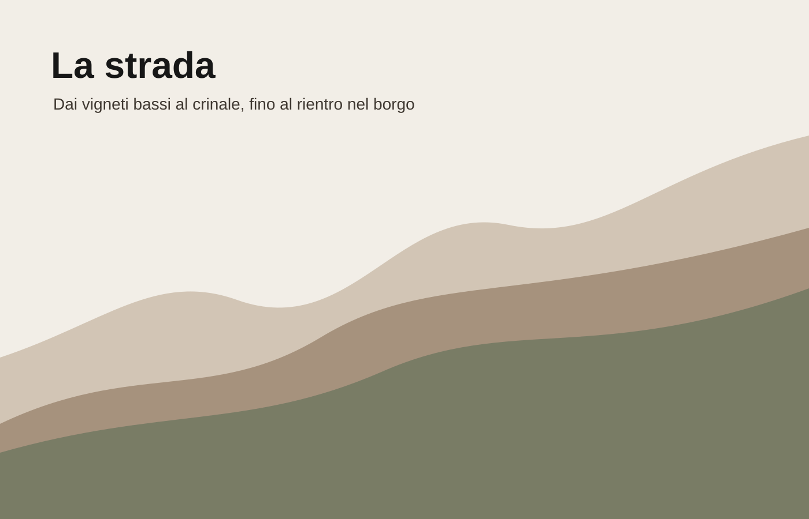
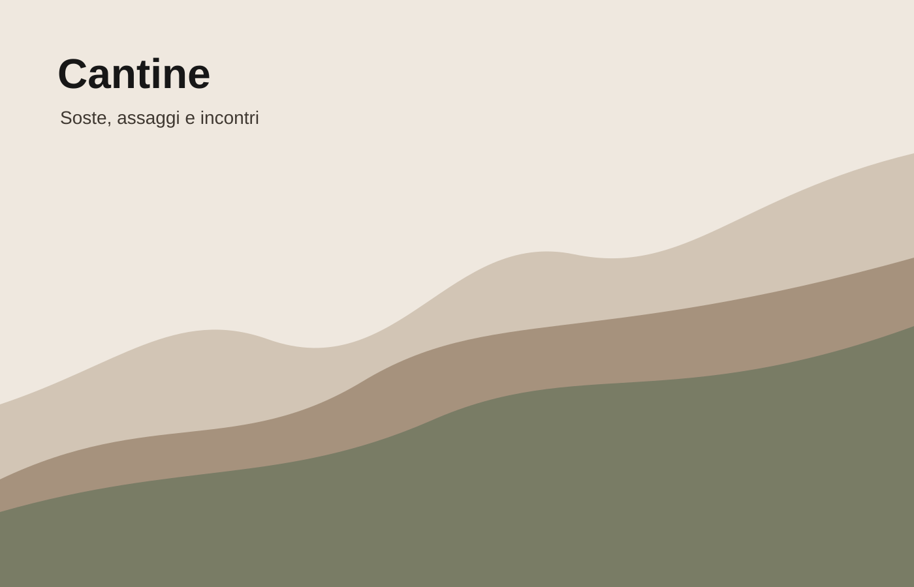
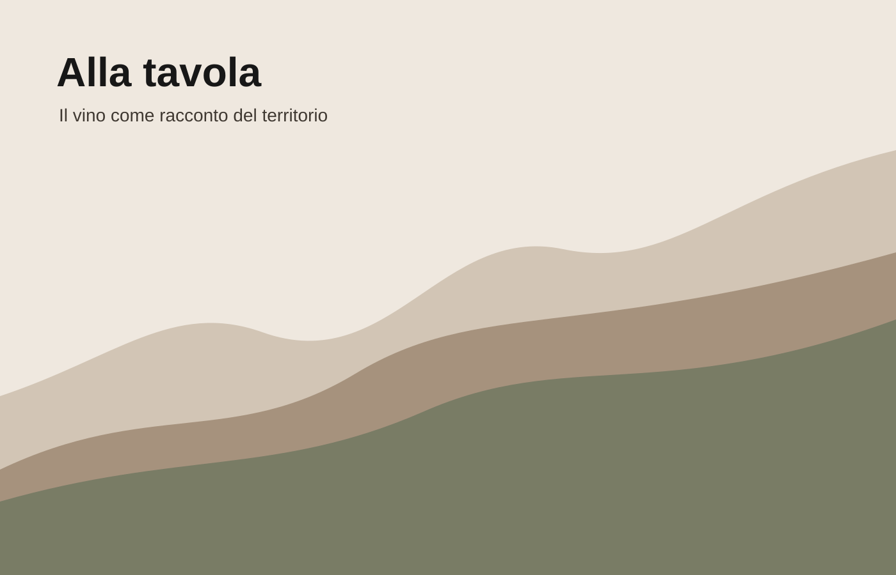

Vigneti di ingresso
Il primo contatto con il paesaggio: filari, terra chiara e strada lenta.
camminoterritorioLa strada del vino
Stracrösa è un percorso tra colline, cantine e piccoli paesi. Una strada che sale dai vigneti, raggiunge il crinale e torna alla tavola con il racconto del territorio.

Il nome
La Ö è il segno del punto più alto: due quote diverse, unite da una piccola traccia. Non è un’icona aggiunta, ma un dettaglio della parola che racconta il percorso.
Il marchio resta tipografico, essenziale e riconoscibile. Il paesaggio non viene disegnato: viene suggerito dal modo in cui il nome si comporta.
La strada
La visita è pensata come un movimento semplice: partenza dal borgo, salita tra i filari, sosta in cantina, punto panoramico e rientro verso la tavola.

Esperienza
Non un itinerario rigido, ma una strada che può cambiare ritmo: più enologica, più panoramica o più conviviale.
Cantine

Il primo contatto con il paesaggio: filari, terra chiara e strada lenta.
camminoterritorio
La sosta principale: degustazione breve, vista aperta e vini di quota.
degustazionequota
Il percorso si chiude con il vino dove è nato per stare: accanto al cibo.
convivialitàritornoVini
Il vino più diretto e conviviale: accompagna il rientro e la tavola.
Frutto, tradizione e immediatezza: il lato più popolare del percorso.
Freschezza e verticalità: il vino che richiama meglio il crinale.
Contatti
Stracrösa vive tra visite, degustazioni, materiali stampati e racconto digitale. Il sito è il punto d’ingresso: semplice, chiaro, coerente con il marchio.
La strada del vino
Email
info@stracrosa.it
Instagram
@stracrosa
Territorio
Colline pavesi